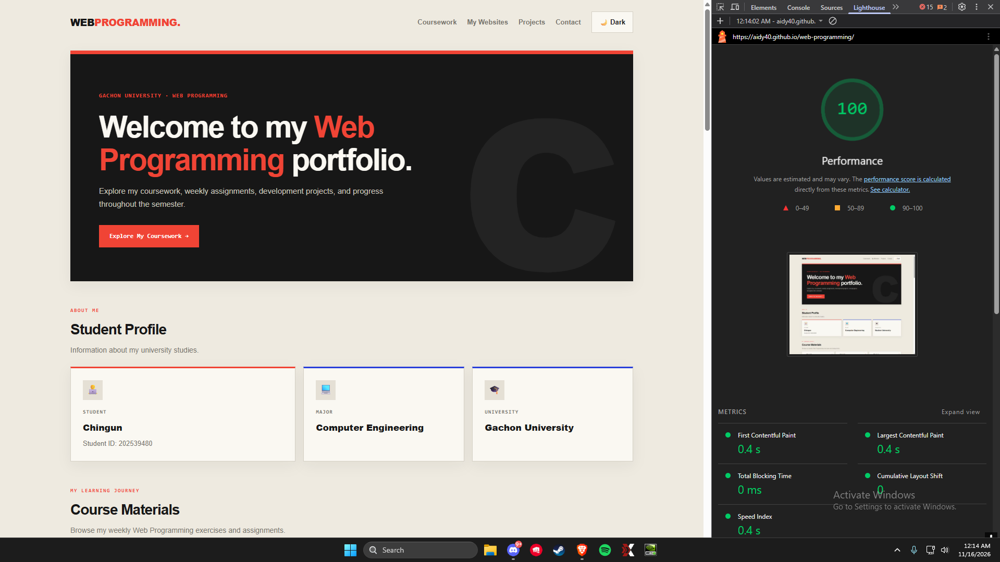

01. Before Optimization
This screenshot shows the initial Lighthouse Performance audit before applying the optimization changes.

Week 10 · Web Programming · Manga Library
This screenshot shows the initial Lighthouse Performance audit before applying the optimization changes.
After reviewing the initial audit, I applied performance improvements and ran Lighthouse again to check the results. The website maintained its perfect Performance score.
Optimization Result
The final Lighthouse Performance score remained at 100/100,
with fast loading metrics and no recorded layout shift.
This screenshot shows the second Lighthouse Performance audit after applying the optimizations.

The following values were recorded in the final Lighthouse audit.